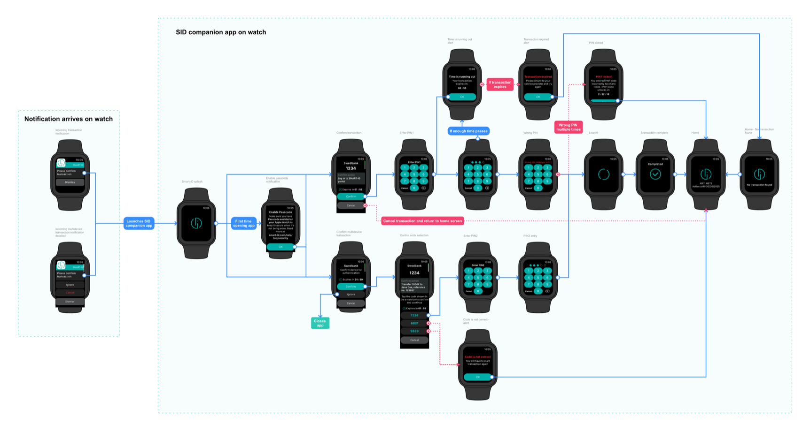

Case study 02 · Smart-ID
Logging in and signing from the wrist
Smart-ID is how people in the Baltics and Belgium log in to banks and e-services and sign documents: they confirm a request and enter a PIN. I proposed doing that on an Apple Watch, persuaded the client it was worth building, designed it, and saw it launch in 2023.
- My role
- Analyst, UX consultant, apps and web portal designer, with Stagnation OÜ’s Smart-ID team. The full background is on the research and design page.
- Who decides
- SK ID Solutions’ service owners make the product decisions; I propose and design.
- Scale
- More than 3.8 million Smart-ID users. Source: smart-id.com, October 2026.
01The problem
Almost everything people do with Smart-ID is one short action: a service asks you to log in or sign, you check the request, you enter PIN1 or PIN2. That action needed a phone within reach every time.
I had worn an Apple Watch for years and could see the fit. The signal from users was informal but consistent: App Store reviews asking for a Watch app, and a few Smart-ID users I knew who wore one and wanted to log in without fetching their phone.
The objection was fair. Apple Watch owners are a small share of Smart-ID’s user base, so the idea sat unprioritised for about two years.
02What I chose to build, and what I cut
To get a decision I stopped arguing in the abstract and designed the whole flow, so that the scope and the cost were both visible. A Smart-ID app engineer then estimated the build, which came in well within the monthly development budget the client had already approved.
My case had three parts: users had been asking for this for years, the use case was a real one and not a novelty, and the cost was low. It also showed that Smart-ID keeps up with the devices its users own.
Built
- Confirming a login or signing request for an account that is already active.
- PIN entry on the watch.
- Clear feedback when a transaction fails, sized for the watch.
Cut
- Account registration. It needs identity documents and several steps, so it stays on the phone.
- Every other feature of the phone app. A watch suits interactions that take seconds, and anything more would have slowed the one thing people came to do.
03The design
The user starts a login at an e-service by entering their national ID number. A push notification arrives on the iPhone and the Watch at the same time.
- Notification Tapping it opens the Smart-ID Watch app.
- Check the request Who is asking, what for, the verification code and the time left, then Confirm or Cancel.
- Enter the PIN PIN1 for a login, PIN2 for a signature, on a pad sized for the watch.
- Done A confirmation, then back to the app’s home screen.


One screen became two
The phone app shows the transaction details and the PIN pad together. The watch has no room for both, so I split them. The split has a side benefit: the user reads who is asking, and confirms it, before a PIN pad appears.
When something goes wrong
A transaction has a time limit and several ways to fail, and each needed a state that fits a watch screen and says what to do next. A wrong PIN keeps the pad in place and shows the attempts left. A request about to expire shows a countdown alert; an expired request or a wrong verification code tells the user to start again at the service. If the request was already completed on the iPhone, the watch says so, so nobody enters a PIN for nothing.
04The result
The Watch app launched in 2023. By 2025, a five-figure number of Apple Watches had completed at least one Smart-ID transaction, and numerous users who had asked for a Watch app in their App Store reviews updated those reviews to higher ratings. Source: the client’s internal analytics and App Store Connect.